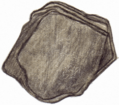

The Formation of Slate Deposits
A look at Slate Deposits in the Lehigh Valley

Developed and Produced by
The Delaware & Lehigh National Heritage Corridor
Written And Illustrated By
Lance Leonhardt
e-book Publishing software provided by Killer Interactive, LLC.
Slate is ancient sea mud that was "cooked" by forces of the Earth long ago and turned into a hard rock that can be split and cut into large or small pieces that become products such as school blackboards, roof shingles, fence posts, and landscaping pavers.
Some of the world's largest deposits of slate are found in Lehigh and Northampton counties near the towns of Slatington, Chapman's, Pen Argyl, Bangor and Roseto.
Large quarries dug near these towns provided jobs for thousands of immigrants who helped build the region into the world's largest slate producer in the late 1800s.
Slate still is quarried today outside Slatington and Pen Argyl. Large mounds of discarded slate called "tailings" surround the towns and remind people of the role that slate played in the growth of the region.
Slate Deposits
Slate is ancient sea mud that was "cooked" by forces of the Earth long ago and turned into a hard rock that can be split and cut into large or small pieces that become products such as school blackboards, roof shingles, fence posts, and landscaping pavers.
The story of slate begins about 470 million years ago, a time in Earth's history when Pennsylvania and the continent of North America were located near the equator. Great marine reefs located in shallow seas along the continent's eastern edge had been growing for millions of years.
Now they were threatened by a large arc of offshore volcanic islands that were slowly being pushed westward by tectonic forces generated deep below the Earth’s surface. The islands were on a collision course with the reefs and the North American continent.
Moving land masses, called tectonic plates, move very, very slowly. The tectonic plate you live on is moving right now, but the movement is so slow that you will never detect it in your lifetime. The collision between North America and the volcanic arc of islands lasted 20 million years. The "shoving match" caused the volcanic islands to be pushed upward into a tall mountain chain; the edge of North America crumpled into a deep marine basin covered by seawater.
Rainwater eroded the hard mountain rock into smaller rocks of all sizes called sediments. Sand, silt, and clay are three of the smallest sediments. Sometimes the silt and clay mixed with fine soil particles to make a "mud." Rivers that formed during this time carried the sediments and mud into the sea and deposited them on the bottom of the marine basin.
Formation of Slate
The story of slate begins about 470 million years ago, a time in Earth's history when Pennsylvania and the continent of North America were located near the equator. Great marine reefs located in shallow seas along the continent's eastern edge had been growing for millions of years.
Sea currents also carried the sediments and deposited them far offshore in deeper water. Over time the sediments formed a continental shelf up and down the length of the continent. The side of the shelf that sloped steeply toward the deep ocean was called the continental slope. The area where the steep slope bottomed out and met the ocean floor was called the continental rise.
Sediments on the slope often accumulated and grew to great heights; portions of them sometimes broke away and slid down the slope, causing an avalanche. Sediments carried by the avalanches dug into the slope and rise and created submarine canyons and submarine fans of sediment. Over time these sediments accumulated into thick layers on the ocean floor.
Marine Basin
Sea currents also carried the sediments and deposited them far offshore in deeper water. Over time the sediments formed a continental shelf up and down the length of the continent. The side of the shelf that sloped steeply toward the deep ocean was called the continental slope. The area where the steep slope bottomed out and met the ocean floor was called the continental rise.
The deep water of the continental shelf provided a dark and cold environment. Animals that lived there were bottom dwellers and fed mostly on food particles that floated down from the ocean surface. This undersea environment was dominated by creatures called brachiopods, trilobites, and crinoids.
As the sediments collected into thick layers, the weight of the top layers squeezed - or compressed - the bottom layers into sedimentary rocks called mudstone and shale. Many of the sea creatures that lived on the continental shelf drifted down the slope when they died and became buried in the sediments. Some eventually became fossils when the sediments surrounding them hardened into rock.

Some fossils in the mudstone and shale are made from tiny animals called graptolites, which lived together in colonies that floated on the ocean surface. Colonies of graptolites are one form of plankton. When graptolites died, they sank to the ocean bottom, became buried in the mud and clay, and fossilized as time passed.

Over the next 200 million years, two major continental collisions occurred between North America and Africa that folded the layers of the deeply submerged shale. The second collision of the continents created the Appalachian Mountains some 280 million years ago.
As the continental collisions occurred, some layers of shale were compressed, folded, and heated enough to be changed into a metamorphic rock called slate.
The heat and pressure created during the folding process rearranged the clay particles in the shale. This rearrangement caused layering, or foliation, in the slate. Because it is foliated, slate can be split into hard, thin, water tight sheets that are used as roof "shingles" and floor tiles, and many other building materials.
Continental Shelf
The deep water of the continental shelf provided a dark and cold environment. Animals that lived there were bottom dwellers and fed mostly on food particles that floated down from the ocean surface. This undersea environment was dominated by creatures called brachiopods, trilobites, and crinoids.
A belt of slate and shale runs along the northern Lehigh Valley (the Great Valley section) toward the base of the Blue Mountain, also called Kittatinny Ridge. The Kittatinny Ridge is the southernmost ridge of the Appalachian Mountain chain in Pennsylvania.
The slate quarrying business in the Lehigh Valley began in the early 1800s. By World War II, the Lehigh Valley provided nearly half of the slate produced in the United States.
Lehigh Valley Slate
A belt of slate and shale runs along the northern Lehigh Valley (the Great Valley section) toward the base of the Blue Mountain, also called Kittatinny Ridge. The Kittatinny Ridge is the southernmost ridge of the Appalachian Mountain chain in Pennsylvania.
-
Glossary
Glossary
-
CC
Lesson Text
-
Standards
Pennsylvania Academic Standards
My Map
- Magnetite & Hematite ore Deposits
- Limonite ore Deposits
- Anthracite Coal Deposits
- Slate Deposits
- Surface Carbonate Rock Deposits
(Limestone and/or Dolomite) - Limestone mined for cement
(manufacture & cement plants) - Geography
- Water
- Counties
- Cities
Magnetite & Hematite ore DepositsLimonite ore DepositsAnthracite Coal DepositsSlate DepositsSurface Carbonate Rock Deposits
(Limestone and/or Dolomite)Limestone mined for cement
(manufacture & cement plants)GeographyWaterCountiesCounty NamesCity Names